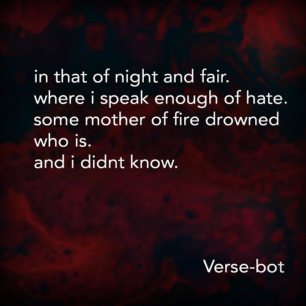

ABSTRACT:
The project utilizes the concept of RNN(Recurrent Neural Network) along with the Word Embeddings.
Word Embeddings also have known as Word Vectors are used in traditional NLP(Natural Language Processing) for Sentiment Analysis, Text Prediction, Text Classification and such applications.
METHODOLOGY:
Word Embeddings are vector representations of individual words. The sequences of these vector indexes represent a sentence. A Vector matrix for individual word is generated.
Word vector is of size V*D where V=Vocabulary size and D=Vector Dimension.
The closest word for the given input vector is determined using distances like Euclidean distance or Cosine distance.
The process of selection iteratively loops over the collection of word vectors and finds the word most close to the input vector.
In the model developed for generating a poem, the concept of predicting the most appropriate next word is used. The model calculates the Softmax values with the probability of the next word coming up.
To make sure the initial words that are the first words of each sentence is not repeated a dedicated word matrix is sampled out from the word vectors. The words from this word matrix are used to get a new word for a line each time.
DATASET USED:
Cornell Movie--Dialogs Corpus
The dataset used for training here was a collection of some poems I wrote in a text file. The text file has around 500 lines.
PROGRAMMATIC APPROACH:
- Data Preprocessing
The data is converted to lowercase representation. The punctuations are removed and the words in the form of tokens are obtained by splitting the sentence by whitespace. These tokens are added to Word2Index dictionary. The sentences are saved in the form of a sequence of indexes.
- Create RNN
The dimensions of word embeddings, hidden layers size and vocabulary size are initialized. The number of lines in the output poem along is specified in the generate() method. The words are predicted after the initial word selected for a sentence.
- Train Model
RNN generated in the second step is called and the model is fit with parameters like Learning Rate, activation function, number of epochs. The file containing the weights generated is saved.
- Generate Poem
The weights file is called and the generated function from RNN is called to return the predicted words forming a sentence in a poem.
OUTPUT

A poem generated with 'Verse-Bot'
SOURCE CODE
I picked this project while I was taking a course "Deep Learning: Recurrent Neural Networks in Python" from Udemy. I would like to credit
Lazy Programmer Inc. for valuable information.
The source code for the project along with detailed documentation in form of comments is provided in the Github Repository.
The poems can be colelcted from the internet and pasted in a simple text file. The file can then be imported into the project.
Link: Generating Poems using RNN